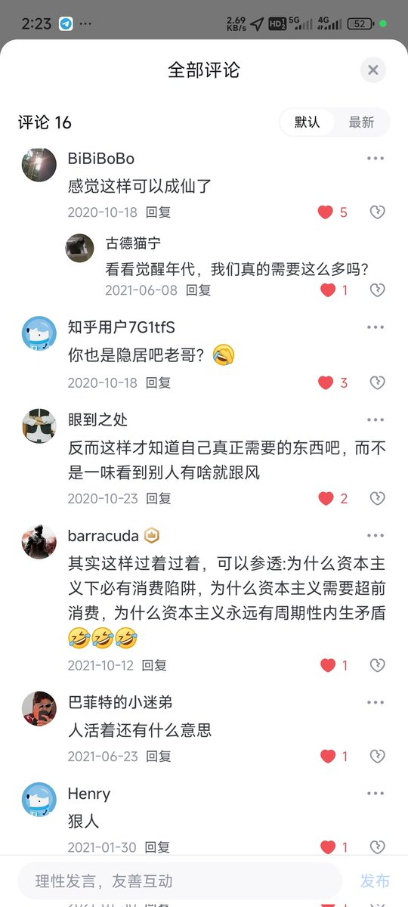

前段时间和我在读北大附中时期的同学聊了聊天。其实如果单论每个月的金钱开销，我和我绝大部分的那个时期的同学都差不多：都是平均一个月一万元至两万元人民币不等。
只是不同的地方是：我每个月开销的两万元真正花在我自己身上的不到两千，其余所有金额都用在了救助上。而他们每个月开销的两万元，那是实打实的花在各种奢侈性开支或是医美/买车/兴趣爱好上了。

只是不同的地方是：我每个月开销的两万元真正花在我自己身上的不到两千，其余所有金额都用在了救助上。而他们每个月开销的两万元，那是实打实的花在各种奢侈性开支或是医美/买车/兴趣爱好上了。

https://t.co/A6KXbyyB1n
事实上庇护所大部分人的生活条件比我本人还好。
我绝大多数时间一个月的个人开支消费平均都在一千元左右。吃饭也几乎从不点外卖，不吸烟不喝酒不嚼槟榔，一个人出行习惯性坐绿皮车以及网吧过夜，很多耐用品常常是我亲密关系和故友的遗留物品，几乎从不买奢侈品…… https://t.co/JJvQ7EjNna https://t.co/29MWJufv3O
事实上庇护所大部分人的生活条件比我本人还好。
我绝大多数时间一个月的个人开支消费平均都在一千元左右。吃饭也几乎从不点外卖，不吸烟不喝酒不嚼槟榔，一个人出行习惯性坐绿皮车以及网吧过夜，很多耐用品常常是我亲密关系和故友的遗留物品，几乎从不买奢侈品…… https://t.co/JJvQ7EjNna https://t.co/29MWJufv3O